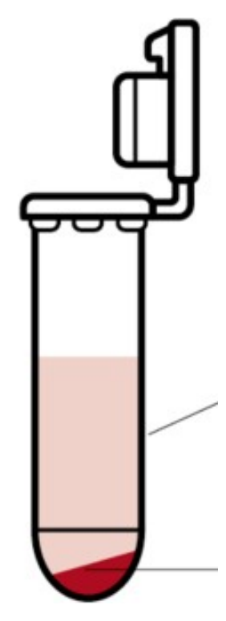

If people have studied it, there must be some way to isolate and detect it
During extraction you are releasing fractions of the cell and collecting them in solution by centrifugation.
Section divider: Extraction. Beneath it, the line “If people have studied it, there must be some way to isolate and detect it.”
Spin down the cells

Supernatant
Unconsumed media compounds (sugars, salts, etc.)
Secreted metabolites
Freely permeable metabolites (i.e. acetaminophen)
Secreted proteins
Secreted polysaccharides
Cell Pellet
Whole intact cells
Everything in or associated with the cells
Tube after Eppendorf, Basics in Centrifugation, handling-solutions.eppendorf.com
The first thing you can do is spin down the cells with a centrifuge. This leaves behind a cell pellet composed of intact cells, and a liquid supernatant. That supernatant contains the materials that were fed originally to the cells as well as anything that they modified or secreted. You can decant off the supernatant leaving behind a cell pellet. That is our simplest type of extraction.
A spun tube, with what ends up in each of its two fractions listed beside it: the supernatant holds unconsumed media, secreted and freely permeable metabolites, secreted proteins and polysaccharides; the pellet holds the whole intact cells and everything in or on them.
What’s in a cell?
We understand the general structure of these cells as being a cytoplasm enclosed by an inner membrane, which is supported by a crosslinked gel of peptidoglycan in the periplasm, and then an outer membrane encompassing the periplasm.
A bacterium in cross-section, with its four compartments named: outer membrane, periplasm, inner membrane, cytoplasm.
What’s in a cell?
Cell lysis: Sonication
Osmotic Shock
Freeze/Thaw
Lysozymes
BugBuster detergent
Bead Milling
French Press
Denaturing methods: Alkaline lysis
If also add RNAse A, the RNA is degraded and removed too